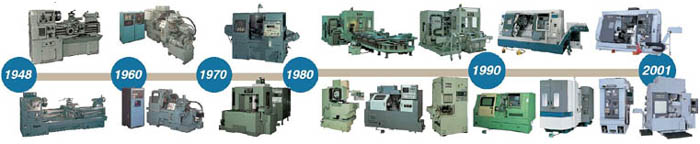

|
GÝRÝÞ
Malzemelere
talaþ kaldýrma yolu ile þekil veren Takým Tezgahlarý, buhar
enerjisinin bulunmasýndan sonra güçlenmiþ, elektrik enerjisinin
kullanýmýyla kapasitesi artmýþ, elektronik sahasýndaki ilerlemeler
sayesinde daha kullanýþlý hale gelmiþ ve son onbeþ yýlda bilgisayarlarda
ve yazýlýmda elde edilen geliþmeler sonunda, daha önceki tezgah
nesillerinden tamamiyle farklý ve deðiþik bir hüviyet kazanmýþtýr.

Henüz
yirmi yýl önce üniversal tornalar, kam tornalarý, rovelver
tornalar, kopya tezgahlarý ve freze tezgahlarý birbirinden
tamamiyle farklý tezgahlardý. Bugün ayný tezgahýn bu beþ fonksiyonu
birden yerine getirdiðini görmek mümkündür.
- Bazý
geometrik cisimlerin iþlenmesi için özel mekanizmalar ve
özel metodlar kullanýlmasý zorunlu idi (Küre torna aparatlarý,
parabolik yüzey tornalanmasý, çok aðýzlý vidalarýn imali
gibi) Bugün bunlara gerek kalmamýþtýr.
- Gerek
ölçme ve gerekse iþleme hassasiyeti hakkýnda evvelce onlu
Mikronlar konuþulurken þimdi tekli, hatta ondalýklý Mikronlar
konuþulmaktadýr.
- Tezgah
ve iþ kazalarý yok seviyesine indirilmiþtir.
- Tezgahý
kullananýn ustalýðýna olan ihtiyaç en düþük seviyeye indirilmiþtir.
- Evvelce
teker teker imal edilen bazý tornalar þimdi montaj bantlarý
üzerinde imal edilmektedir.
- Kesici
takým teknolojisinde ve kesme yaðlarýnýn performansýnda
elde edilen geliþmelerle elektromekanik geliþmeler parça
imalat sürelerinin çok düþük seviyelere inmesine yol açmýþtýr.
1.
BÖLÜM. TAKIM TEZGAHLARININ GELÝÞMESÝNE YOL AÇAN FAKTÖRLER
1.1. TEKNOLOJÝK ÝHTÝYAÇLAR VE CNC TEKNOLOJÝSÝNÝN DOÐUÞU
CNC
tezgahlarý esas olarak uçak ve helikopter sanayilerinde beliren
ihtiyaçlarý karþýlamak için ortaya çýktý, otomotiv endüstrisinde
uygulanmasý sýrasýnda geliþti ve yaygýnlaþtý. Makine mühendisliðinde
yapýlmasý en zor parçalardan birisi helikopter pervane göbeðidir.
Göbek genelde bir gaz türbinine (Gücü 800 ila 2000 PS) baðlý
redüksiyon tertibatý tarafýndan döndürüldüðünde, pervane palalarý
düþey eksen etrafýnda dönerken göbeðe baðlandýklarý noktadan
geçen yatay eksen etrafýnda salýným hareketi yaparlar. Buna
ek olarak baðlantý noktasýnda aþaðýya ve yukarýya doðru bir
mafsal yardýmýyla hareket edebilirler. Göbek hem gerekli torku
nakletmeli, hem pilotun kumanda levyesinden gelen uçuþ kumanda
hareketlerini pervane palalarýna ileten mekanizmayý içermeli,
ayrýca statik ve dinamik yükler altýnda çatlayýp kýrýlmamalý
ve denizin tuzlu sisi dahil pek çok korozif maddeye dayanýklý
olmalýdýr. Netice itibariyle 70 tonluk bir tanký taþýyan yük
helikopterini havada tutan parça, bir pervane göbeðidir. Her
helikopterde benzer þartlar altýnda çalýþan binlerce makine
elemaný bulunur.
Vietnam
savaþý sýrasýnda helikopterlere duyulan ihtiyaç, lot büyüklüðü
25 ila 100 adet fakat birbirinin týpatýp ayný (birbiriyle
deðiþtirilebilen) ve çok sayýda (onbinlerce) farklý parçanýn
üretilmesini gerekli kýldý. Bu parçalarda kýsa fasýlalarla
dizayn deðiþiklikleri yapýlýyor ve imalatçýlar freze tezgahlarýnda
neredeyse her operasyon için bir farklý aparat kullanýyorlar
ve bazen de hassas aparatlarý üzerinden hiç sökülmeyen (ve
baþka iþte kullanýlmayan) freze tezgahlarýný bu iþlere tahsis
etmek zorunda kalýyorlardý. Parçalar dövme çelik, titanyum,
aluminyum veya egzotik metal alaþýmlarýndan yapýlýyordu, dolayýsýyla
ham maddesi pahalýydý; Konvansiyonel
tezgahlarda özel ve hassas aparatlar kullanýlarak imal edilen
bu parçalarýn firesi yüksek idi.
Bunun
üzerine, lot büyüklüðü 5 ila 10 adet olan, çok hassas toleranslara
sahip parçalarýn iþlenebilmesi için önce Nümerik Kontrollu
(NC) ve sonra bilgisayarlarýn geliþmesiyle CNC (Computer Numeric
Control) tezgahlar yapýlmaya baþlandý.
CNC
tezgahlar, kendinden önceki tezgah tasarýmýný ve kullanýmýný
tamamiyle deðiþtirmiþ ve mühendislerle atölye ve fabrika sahiplerine
yepyeni imkanlar saðlamýþtýr.
|